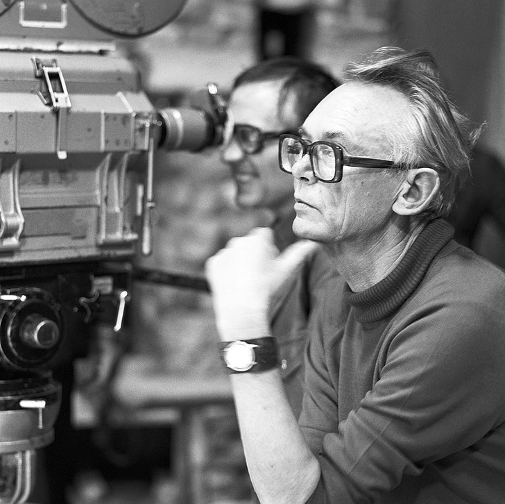
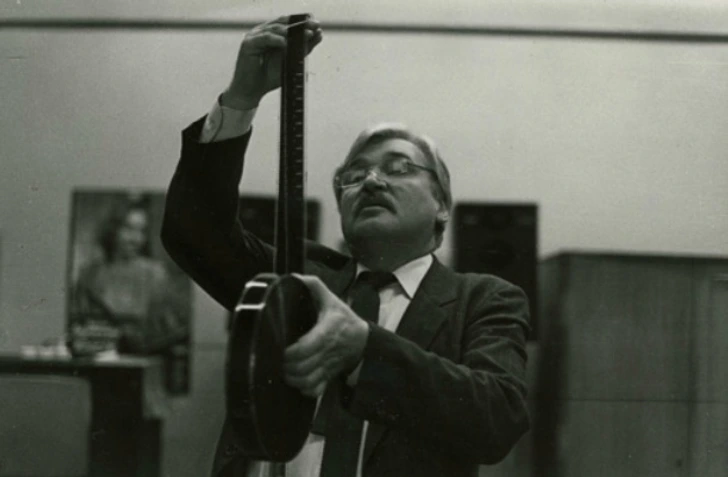
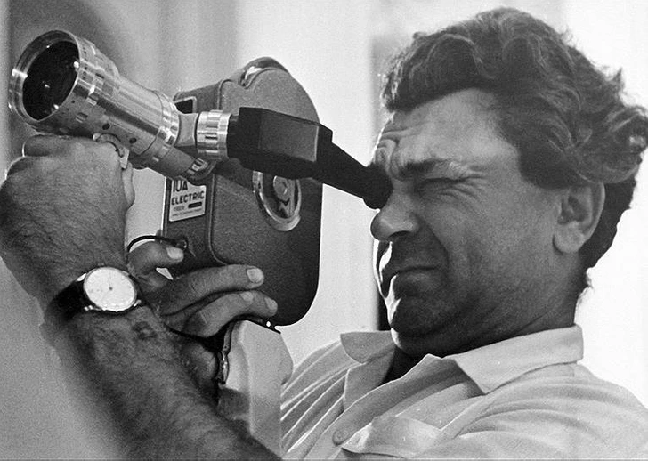
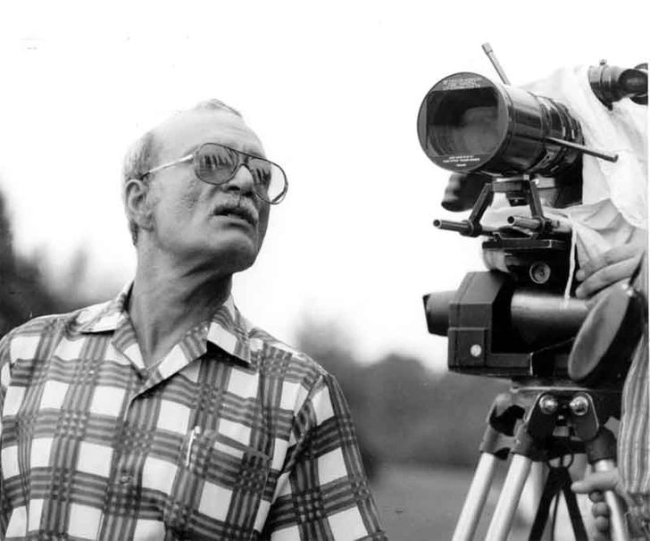
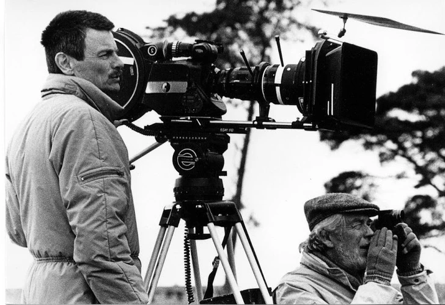
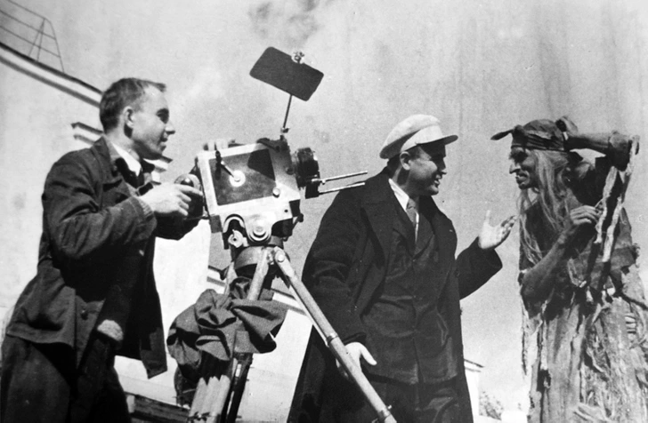

Отечественные режиссеры
Леонид Гайдай
Леонид Иовович открыл новый жанр народной комедии, в котором до него никто не работал. В советском кино было принято снимать идеологически выдержанные, скучные фильмы, а Гайдай, выросший на фильмах с Чарли Чаплином и обожавший этого персонажа, мечтал снимать комедии — живые, веселые.
Игорь Масленников
Все знают и, несомненно, любят отечественную экранизацию серии книг Артура Конана Дойла про эксцентричного сыщика Шерлока Холмса и его друга доктора Ватсона. Постановка Игоря Масленникова считается одной из лучших даже среди самих англичан, и во многом это заслуга режиссера.
Сергей Бондарчук
Сергей Бондарчук оставил после себя настоящие шедевры киноискусства. По части масштабных постановок ему не было равных. Да и сейчас вряд ли найдутся кинематографисты, способные превзойти его в мастерстве создания глубоких эпических фильмов. Такие его фильмы, как «Они сражались за Родину», «Судьба человека», «Молодая гвардия», навсегда вошли в историю отечественного кинематографа, а грандиозные сцены с многотысячной массовкой в «Войне и мире», «Ватерлоо» помнит каждый зритель.
Георгий Данелия
Советский актер, режиссер и сценарист Георгий Николаевич Данелия является автором таких шедевров кино, как «Я шагаю по Москве», «Мимино», «Паспорт», «Кин-дза-дза!», «Афоня». Его фильмография — ценнейшая летопись целой страны. Картины Данелии не просто смешат и печалят, не просто увлекают остроумием мысли, условиями игры, блеском исполнения и «заставляют задуматься о жизни». Нет, они сами — эта жизнь, образно выраженная на экране.
Андрей Тарковский
Тарковский — настоящая легенда советского кинематографа. Его вклад в мировое искусство сложно переоценить. Фильмы «Иваново детство», «Солярис», «Жертвоприношение» до сих пор являются классикой советского и европейского кино. Тарковский-режиссер известен во всех уголках планеты. Его фильмы переведены на десятки языков. Это фильмы о вечных темах, над которыми размышляет человек в любой точке земного шара: о слабости и силе человеке, о природе, о родине, о любви матери к сыну, о судьбе.
Александр Роу
Добрый сказочник Александр Артурович Роу знаком нам всем с детства. 16 сказок, которые он создал, являются классикой детских фильмов. «Королевство Кривых Зеркал», «Огонь, вода и медные трубы», «Василиса Прекрасная», — кажется, эти фильмы будут пересматривать дети во все времена.